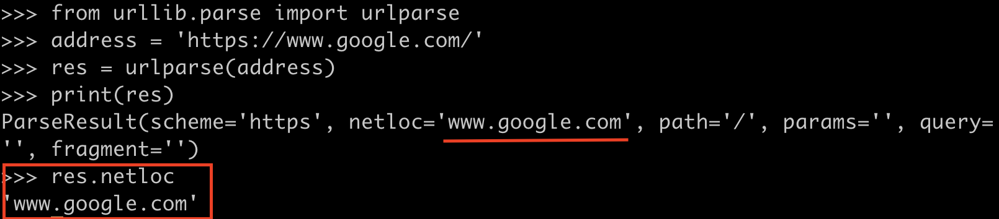
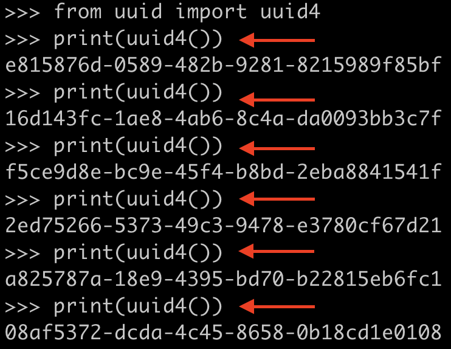

上一篇文章中，我们搭建了一个简易的区块链。在本文中，我们在上一篇的基础上，加入数字货币以及转账功能。
前情回顾
上篇文章中，我们实现了一个简易的区块链。区块中存放的信息有：区块编号index，时间戳timestamp，PoW算法中的proof以及前一区块哈希值previous_hash。并且能够通过调用函数来查看区块链信息并挖出新区块。
为了搭建一个数字货币，我们需要在此区块链基础上，加入交易信息以及转账功能。更重要的是，我们要把该区块链在多个节点上运行，模拟去中心化的过程。
完善区块链结构
首先，引入必要的库文件：
1 | import datetime # 用于生成时间戳 |
这里，依旧使用Blockchain类搭建区块链的基本结构：
-
__init__(self):初始化函数中，除了记录区块链中每个区块的信息外，还需要记录当前未被加入区块的交易，以及当前区块链网络中的所有节点：1
2
3
4
5def __init__(self):
self.chain = []
self.transactions = []
self.create_block(proof = 1, previous_hash = '0')
self.nodes = set() -
create_block(self, proof, previous_hash):生成新区块，除了要记录区块的编号，时间戳，proof和上一区块哈希值外，还要把当前网络中没被加入到区块中的交易打包，记录到新区块中。并把交易缓存清空：1
2
3
4
5
6
7
8
9def create_block(self, proof, previous_hash):
block = {'index': len(self.chain) + 1,
'timestamp': str(datetime.datetime.now()),
'proof': proof,
'previous_hash': previous_hash,
'transactions': self.transactions}
self.transactions = [] # 清空交易缓存
self.chain.append(block)
return block -
get_previous_block(self)：返回前一区块信息 -
proof_of_work(self, previous_proof)：计算proof -
hash(self, block)：计算当前区块哈希值 -
is_chain_valid(self, chain)：判断当前区块链是否有效1
2
3
4
5
6
7
8
9
10
11
12
13
14
15
16
17
18
19
20
21
22
23
24
25
26
27
28
29
30
31
32
33def get_previous_block(self):
return self.chain[-1]
def proof_of_work(self, previous_proof):
new_proof = 1
check_proof = False
while check_proof is False:
hash_operation = hashlib.sha256(str(new_proof**2 - previous_proof**2).encode()).hexdigest()
if hash_operation[:4] == '0000':
check_proof = True
else:
new_proof += 1
return new_proof
def hash(self, block):
encoded_block = json.dumps(block, sort_keys = True).encode()
return hashlib.sha256(encoded_block).hexdigest()
def is_chain_valid(self, chain):
previous_block = chain[0]
block_index = 1
while block_index < len(chain):
block = chain[block_index]
if block['previous_hash'] != self.hash(previous_block):
return False
previous_proof = previous_block['proof']
proof = block['proof']
hash_operation = hashlib.sha256(str(proof**2 - previous_proof**2).encode()).hexdigest()
if hash_operation[:4] != '0000':
return False
previous_block = block
block_index += 1
return True -
add_transaction(self, sender, receiver, amount):为了能让不同节点之间转账，需要记录转账信息：发送者sender，接受者receiver，以及转账金额amount：1
2
3
4
5
6def add_transaction(self, sender, receiver, amount):
self.transactions.append({'sender': sender,
'receiver': receiver,
'amount': amount})
previous_block = self.get_previous_block()
return previous_block['index'] + 1 # 返回这些交易将要被加入的区块编号 -
add_node(self, address):区块链最重要的一点是分布式运行，我们需要在网络中加入多个节点：urlparse用法：给定一个url，urlparse可以解析该url，我们需要其中的netloc。以下以谷歌官方举个例子：

1
2
3def add_node(self, address):
parsed_url = urlparse(address) # 解析url
self.nodes.add(parsed_url.netloc) # 把地址加入到区块链的节点列表 -
replace_chain(self):在区块链中，每个节点要及时和当前网络中的最长链进行比较并同步：1
2
3
4
5
6
7
8
9
10
11
12
13
14
15
16
17
18def replace_chain(self):
network = self.nodes # 获取网络中所有节点
longest_chain = None # 保存最长链
max_length = len(self.chain)
# 遍历所有节点，找出最长链
for node in network:
response = requests.get(f'http://{node}/get_chain') # 调用get_chain函数
# 如果状态码为200，表示访问正常
if response.status_code == 200:
length = response.json()['length']
chain = response.json()['chain']
if length > max_length and self.is_chain_valid(chain):
max_length = length
longest_chain = chain
if longest_chain:
self.chain = longest_chain
return True # 当前节点已替换为最长链
return False # 当前节点已经是最长链，未替换
添加交互接口
和上一节交互方式类似，使用Flask，Postman并且设计不同的函数让我们和区块链进行交互。
1 | # Creating a Web App |
注意：这里使用了uuid库中的uuid4()函数。UUID全称Universally Unique IDentifier，全局唯一标识符。UUID会通过Mac地址，时间戳，伪随机数等方式，用算法生成一个（几乎）不会重复的128位唯一值，通常用32个字符串表示。uuid4是UUID的一种实现方式。
以下为
uuid4()举例，每次生成的UUID均不同。你也可以在这个网站试一试。
- 挖矿：挖矿函数和上一节类似，区别在第8行和第15行。第8行加入了挖矿奖励，只要挖矿成功，便额外添加一笔交易，作为给自己的奖励。第15行中把该区块中包含的交易也展示出来。
1 | # Mining a new block |
- 获取区块链信息：和上一节一样，获取当前区块链信息，包括区块高度。
1 | # Getting the full Blockchain |
- 检查当前区块链是否有效：和上一节一样。
1 | # Checking if the Blockchain is valid |
- 添加一笔交易：注意这里methods要设成POST，因为我们要给区块链发送交易信息。
1 | # Adding a new transaction to the Blockchain |
- 连接到其他节点：为了实现去中心化，这次我们会尝试多个节点一起运行。这就需要当前节点能够连接到网络中的其他节点。注意，method也是POST。
1 | # Connecting new nodes |
- 替换最长链：
1 | # Replacing the chain by the longest chain if needed |
最后，让我们的代码跑起来吧：
1 | # Running the app |